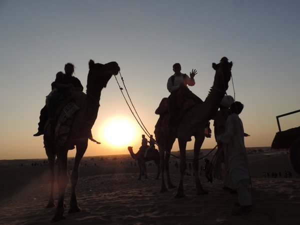

Complete 10 Days Golden Triangle Tour Package

Overview
Package Name:Complete 10 Days Golden Triangle Tour Package
Duration:9 Nights/10 Days
Price(per person on twin sharing):Rs.29900/-
Rating:5.0
Itinerary Highlights
Day 1: Jaipur Pickup
Meals: Dinner only
Pickup from Jaipur Airport / Railway station and Proceed to Jaipur Jaipur Hotel after fresh up This morning excursion takes you to Amber Fort. In the afternoon, explore Jaipur visiting Jantar Mantar, Continue past Moti Doongri Palace - a privately owned hilltop fort built like a Scottish castle - to Ram Niwas Gardens and architecturally impressive Albert Hall. City Palace, Jal Mahal & Hawa Mahal. Overnight stay in Hotel.
Day 2: Jaipur Full day sightseeing.
Meals: Breakfast & Dinner
After breakfast do full day sightseeing of Jaipur Local City Tomb of Salim Chisti, Panch Mahal and other Palaces. Proceed to Jaipur. Evening Check in hotel, rest of the day leisure. Overnight stay in Jaipur.
Day 3: Jaipur to Udaipur(270 kms)
Meals: Breakfast & Dinner
After breakfast proceed to udaipur sightseeing including of lakes, Sehelion ki bari, Eklingji and-Nathdwara.-Overnight-stay at Hotel in Udaipur.
Day 4: Udaipur Sightseeing
Meals: Breakfast & Dinner
After Breakfast, proceed to Udaipur, check in into the hotel, This morning you will be given the city tour. City tour of Udaipur -The tour will cover the magnificent City Palace, the Jagdish temple, the pleasure gardens and a drive around the other nearby lakes. Later you will enjoy a cruise by private boat on the placid waters of Lake Pichola. From the lake you have a wonderful view of the City Palace stretching along the east bank, Overnight stay at Hotel in Udaipur evening free at leisure. Overnight stay at Hotel in Udaipur.
Day 5: Udaipur to Jodhpur(250 kms)
Meals: Breakfast & Dinner
After breakfast, proceed to Jodhpur Check in to hotel after freshup go to Sightseeing Like Mehrangarh Fort,Museum, Jaswant Thada,Clock Tower, Sightseeing Like Umed Bhawan Palace, evening time you can see the bishnoi village safary by jeep on owen expensive check-in and overnight stay at hotel in Jodhpur.and check-in and overnight stay at hotel in Jodhpur.
Day 6: Jodhpur to Jaisalmer(283 kms)
Meals: Breakfast & Dinner
After breakfast proceed to Jaisalmer visit the Khuri village and enjoy the camel cart ride to the Sunset Point and Sam sand dunes. Take the camel safari and explore the true life and delights of the desert. Immerse in the spirit of Rajasthan all through the night by staying in the mud-huts, meeting warm rustic people of Rajasthan and have a touch of their culture with their haunting music, folk dance and singing performances and other cultural programs.over night stay in tent.
Day 7: Jaisalmer Sightseeing
Meals: Breakfast & Dinner
After breakfast move for local sight seen of jaisalmer, evening time go for Sand dunes, Take there Camel ride, and cultural program and back to the hotel.Dinner and overnight stay at hotel.
Day 8: Jaisalmer to Mount Abu(441 kms)
Meals: Breakfast & Dinner
After breakfast check out from hotel, Mount Abu, the only hill station of Rajasthan, that is also an important Jain journeying center in India. check in the hotel After lunch visit the famous 11th century Dilwara religious belief temple advanced. enjoy a cruise through Nakki Lake at sunset, starting from the Sunset purpose and overnight at in hotel Mount abu.
Day 9: Mount Abu to Bikaner(512 kms)
Meals: Breakfast & Dinner
After Breakfast Check out the hotel From Mount Abu We Proceed To Bikaner. Overnight Stay In Bikaner.
Day 10: Drop with Bikaner Sightseeing
Meals: Breakfast only
After breakfast we visit Lalgarh Palace, Jungarh Fort, Har Mandir Shiva Temple, which is located inside the fort, Raj Ratan Bihari Temple, Rasik Shiromani Temple, Bhand Sagar Jain temple which is dedicated to Adinath and Parasvanath. After That drop your Departure point. End of Journey With Sweet Memories.
Inclusion
- Deluxe Room Accomodations
- Pick and drop from Railway Station/Airport with driver Allowance & Fuel
- Toll Tax, State Permit tax & parking
- Transportation by Car
- All sightseeing by Transportation Car
- Daily breakfast and dinner
Exclusion
- Meals & drinks other than specified in inclusions
- Expenses of personal nature such as laundry,tips,telephone calls,etc
- 5% GST Extra
- Driver Allowance
- Any adventure activity
- Any air/train/bus fare, Monument or Fort Entrance fee/Camera fees
Transport Information
Car from Jaipur to Jaipur.
Payment
For all the services contracted, certain advance payment should be made to hold the booking on the confirmed basis and the remaining amount should be paid definitely before the commencement of the services.
Management holds the right to decide upon the amount to be paid as advance payment, based on the nature of the service & the time left for the commencement of the service.
Apart from above in some cases like Special Train Journeys, hotels or resorts bookings during the peak season (X-Mas, New Year), full payment is required to be sent in advance.
Cancellation & Refund Policy
In the event of cancellation of tour/travel services due to any avoidable/unavoidable reason/s, we must be notified of the same in writing. Cancellation charges will be effective from the date we receive advice in writing, and cancellation charges would be as follows:
- 45 days prior to arrival: 10% of the Tour/service cost
- 15 days prior to arrival: 25% of the Tour/service cost
- 07 days prior to arrival: 50% of the Tour/service cost
- 48 hours prior to arrival OR No Show: No Refund
Note: Written cancellation will accept on all working days, except Sunday, Any cancellation sent on Sunday's will be considered on next working day (Monday).
For the X-mas and new year period from 20 Dec to 05 Jan the payment is non-refundable. In case you cancel the trip after commencement, the refund would be restricted to a limited amount only which too would depend on the amount that we would be able to recover from the hoteliers/ contractors we patronize. For unused hotel accommodation, chartered transportation & missed meals etc. we do not bear any responsibility to refund.
Additional Information
For all the services contracted, certain advance payment should be made to hold the booking on the confirmed basis and the remaining amount should be paid definitely before the commencement of the services.
Management holds the right to decide upon the amount to be paid as advance payment, based on the nature of the service & the time left for the commencement of the service.
Apart from above in some cases like Special Train Journeys, hotels or resorts bookings during the peak season (X-Mas, New Year), full payment is required to be sent in advance.